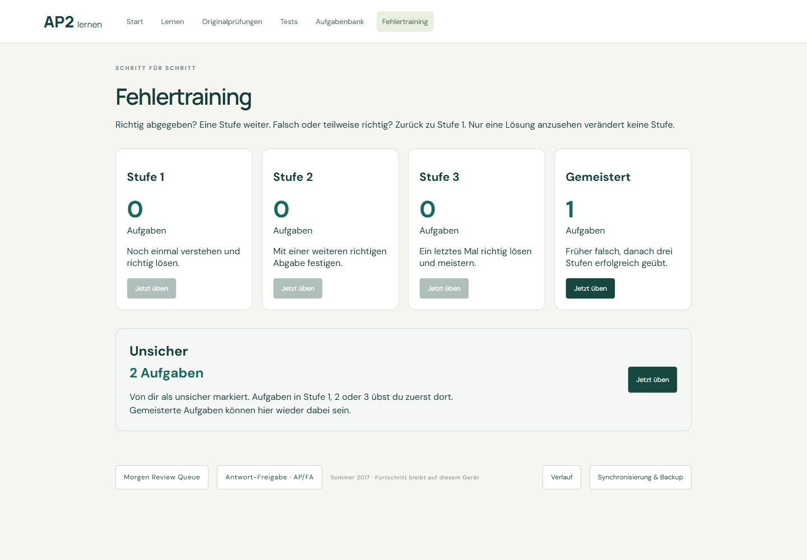

Phase 3C — Persistent Unsicher
Unsicher 是按用户与题目保存的当前个人状态。提交后仍可修改；重试、模块重启和训练重启不会清除。当前状态与历史 Attempt 快照独立。
打开 Fehlertraining / Unsicher · 打开自由学习示例 · 浏览器验收记录
验证结果
- 176 自动化测试通过；3 个需独立模拟器的测试未在本地运行，CI 另行运行。类型检查与生产构建通过。
- 迁移仅为缺失状态取最新有效正式 Attempt；已有 true/false 状态优先。重复迁移幂等，原 Attempt 不改写。
- 覆盖非法/已废弃/已删除考试结果排除、旧备份、状态备份还原、用户隔离、版本冲突与旧 annotation 接口不能修改历史 unsure/confidence。
- 浏览器覆盖提交前后修改、只看答案不增加进度、刷新、切题、重试、模块/训练重启、真实浏览器关闭重开、笔记保留、考试与测试作答时隐藏及提交后编辑。
- Stufe 1/2/3 优先，排除 Unsicher 重复项；三次正确达到 Gemeistert 后仍标记的题重新进入 Unsicher。
- 训练开始保存固定快照；取消标记不会改变当前轮题序，重新进入/重启才刷新集合。
- 全部验收使用隔离的浏览器数据，不操作真实用户学习记录。
- 题库仍为 43 个模块、1,368 题；没有 PDF 扫描、Firebase 配置或自适应功能变更。
独立 Unsicher 集合与错题阶段

示例中一题已 Gemeistert，仍保留 Unsicher；两题可进入独立训练集合。它不是第五个错题阶段。
当前状态保存在本机 IndexedDB，并包含在备份中；本阶段没有接入云同步。完成后停止，不处理其他数据扩展。